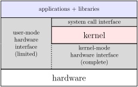
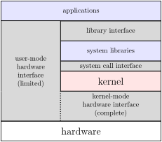

Changelog:
- 7 Feb 2024: in further resources, note exception terms used by textbooks
- 13 Feb 2024: correct typo in URL of link to processes and threads reading
- 16 Sep 2025:
the could
->the OS could
in I/O patterns section
1 Kernel Mode vs. User Mode
All multi-purposed chips today have (at least) two modes in which they can operate: user mode and kernel mode1. Thus far you have probably only written user-mode software, and most of you will never write kernel-mode software during your entire software development careers.
1.1 Definitions
When running in kernel mode, the hardware allows the software to do all operations the hardware supports. In user mode, instead, some operations are not allowed.
The code that runs in kernel mode is called the kernel.
If the code running in user mode wants to perform one of the prohibited operations, it must instead ask the kernel to do so on its behalf.
1.2 Motivation
Running software in user mode only restricts what that software can do; it does not provide access to any additional functionality. But this restriction provides several advantages.
1.2.1 Limiting Bugs’ Potential for Evil
One reason to not run in kernel mode is to limit the impact a software bug can have. Inside the computer is all of the code and data that handles drawing the screen and tracking the mouse and reacting to keys and so on; I’d rather not be able to make a mistake when writing my Hello World program and accidentally mess up those core functionalities. By running in user mode, if my code tries to touch any of that it will be blocked from doing so: my program will crash, but the computer will keep running.
1.2.2 Each Program Thinks it is in Control
Physical computers have limited physical resources. One of the benefits of running in user mode is that the particular limitations are hidden from you by the kernel and hardware working together. For example, even if you only have 8GB of memory you can still use addresses larger than that limit: the kernel and hardware will work together to provide the illusion that there was enough memory even if there was not.
This illusion is even more important when you are running more than one process simultaneously. Perhaps you have a terminal, an editor, and your developed code all running at once. The kernel and hardware will work together to ensure that your code cannot even see, let alone modify, the memory being used by the terminal or editor. Each program is given the illusion of being the only one running on an unlimited machine.
1.2.3 Wrapper around Hardware
Each piece of hardware attached to a chip has its own protocols and nuances of operation. Fortunately, only the kernel needs to know about those details. If the mouse tries to talk to your program directly, the kernel intercepts the communication and handles it for you so you don’t notice it happened unless you asked the kernel to inform you about it. If you try to talk to the disk, the kernel likewise moderates that communication, keeping you from needing to know the specific protocol the currently-attached disk expects.
1.2.4 Multiple Users
Because the kernel is an unavoidable intermediary for talking to hardware, it can choose to forbid some interactions. One common use of this is to allow multiple user accounts. Since the kernel is the one that controls access to the disk, for example, it can choose to prohibit my processeses from accessing the part of the disk it has assigned to you and not me.
1.3 Implementation
1.3.1 Protected Instructions and Memory
When in user mode, there are a set of instructions that cannot be executed and segments of memory that cannot be accessed. Examples of things you cannot directly access in user mode include
- the part of memory that stores information about which user account you are logged into
- instructions that send signals out of the chip to communicate with disks, networks, etc.
- instructions that let user-mode code execute in kernel mode
1.3.2 Mode Bit
The simplest way to create two modes is to have a single-bit register somewhere on the chip that indicates if the chip is currently executing in user mode or in kernel mode. Each protected instruction then checks the contents of that register and, if it indicates user mode, causes an exception instead of executing the instruction. A special protected instruction is added to change the contents of this mode register, meaning kernel-mode code can become user-mode, but not vice versa.
Modern processors often have more than one operating mode with more than one level of privilege, which (among other benefits) can help make virtualization efficient; the details of these additional modes are beyond the scope of this course.
1.3.3 Mode-switch via Exceptions
The core mechanic for switching to the kernel is a hardware exception. An exception results in several functionally-simultaneous changes to processor state, notably including both (a) changing to kernel mode and (b) jumping to code in kernel-only memory. Thus, the only mechanisms that exist for entering kernel mode will run kernel code for the next instruction, preventing user code from running itself in kernel mode.
The nature of these hardware exceptions and the jump to kernel code that is associated with them is a large enough topic to deserve its own section.
2 Exceptions
Hardware exceptions are examples of exceptional control flow
:
that is, the sequence of instructions being operated around an exception
is an exception to the usual rules of sequentiality and jumps. They also
tend to appear in exceptional (that is, unusual) situations.
2.1 Kinds
There are several kinds of hardware exceptions.
Confusingly, terms for exceptions and particular kinds of exceptions vary across sources. Here, we care that you know that hardware exceptions have many uses rather than knowing specific terms.
In the convention we have followed, we use exception
as the
generic term and use the terms interrupt
or trap
for
particular kinds of exceptions. Some sources use interrupt
or
`trap’ for the generic term instead and use exception
to refer to
a more specific term (probably roughly equivalent to what we call
faults
). There is also some other variation in the definitions of
the more specific terms. So, when reading a processor manual or similar
reference, be careful to look for context to see exactly how they define
each of the terms below.
2.1.1 Interrupts
An interrupt occurs independently from the code being executed when it occurs. It might result from the mouse moving, a network packet arriving, or the like.
Input devices commonly triggering interrupts allows the operating system to process and act on input even if that input occurs while an unrelated program is running.
Interrupts are typically handled by the kernel in a way that is invisible to the user code. The user code is frozen, the interrupt is handled, and then the user code is resumed as if nothing had happened.
2.1.2 Faults
A fault is the result of an instruction failing to succeed in its execution. Examples include dividing by zero, dereferencing a null pointer, or attempting to execute a protected instruction while in user mode.
There are two basic families of responses to faults: either the kernel fixes the problem and reruns the user code that generated the fault, or it cannot fix the problem and kills the process that caused the fault. In practice, fixable faults happen quite often, most frequently the page fault that occurs when using virtual memory. (As described in more detail in the virtual memory reading, these occur when a program accesses memory that is not yet assigned to the program (as far as the hardware knows). The OS can choose to respond to the fault by assigning the memory to the program. Then, it can allow the memory acess to be retried and this time, the hardware will be able to complete the memory access.)
Even faults the kernel cannot fix on its own may be handled by having the kernel’s fault handler ask the user code if it knows how to fix them. On Unix-like systems like Linux, this is done through a mechanism called signals. However, many programs do not handle the signals, so the kernel’s handler will often end up just terminating the program regardless.
2.1.3 Traps
A trap is an exception caused by a special instruction whose sole job is to generate exceptions. Traps are the main mechanism for intentionally switching from user mode to kernel mode and are the core of all system calls. System calls are typically function-call like interfaces provided by kernels to allow programs to access protected functionality. System calls are used to interact with the file system, spawn and wait on threads, listen for key presses, and anything else that you cannot do with simple code alone.
The system call interface
.

We can view the combination of the limited user-mode hardware interface and system calls as collectively defining the interface user mode code sees.
2.2 Handling
When an exception occurs, the processor switches to kernel mode and
jumps to a special function in kernel code called an exception
handler.
Because interrupts exist, this can happen without any
particular instruction causing the jump, and thus might happen at any
point during code execution. In order for the handler to later resume
user code, the exception-handling process must also save the processor
state before executing the handler.
2.2.1 Save-Handle-Restore
The basic mechanism for any exception to be handled is
- Save (some of) the current state of the processor (program counter, kernel mode bit, etc.)
- Enter kernel mode
- Jump to code designed to react to the exception in question, called an exception handler
- When the handler finishes, enter user mode and restore processor state (program counter, kernel mode bit, etc.)
These steps (except for the actual execution of the exception handler) are all done atomically by the hardware.
Processors vary in how much of the processor state they save and restore in hardware. The PC has to be saved and restored since jumping to the exception handler overwrites the old PC value. The processor may also save and restore the values of all or some of the other registers. If the processor itself does not, then the operating system’s exception handler code can do this instead.
2.2.2 Which Handler?
In general, there can be as many different exception handlers as there are exception causes. To select which one to run, the hardware consults something called an exception table. The exception table is just an array of code addresses; the index into that array is determined by the kind of exception generated (e.g., divide-by-zero uses index 0, invalid instructions use index 6, etc.). The index is called an exception number or vector number and the array of code addresses is called the exception table.
Switches
Having an array of code addresses is not unique to exception
handlers; it is also present in C in the form of a switch
statement.
For example, the following C code
switch(x) {
case 0: f0();
case 1: f1();
case 3: f3();
case 2: f2();
break;
case 4:
case 5: f5();
case 6: f6();
break;
case 8: f6();
}compiles down to the following assembly code
cmpl $8, %eax
ja AfterSwitch
jmpq * Table(,%rax,8)
Case0:
callq f0
Case1:
callq f1
Case3:
callq f3
Case2:
callq f2
jmp AfterSwitch
Case5:
callq f5
Case6:
callq f6
jmp AfterSwitch
Case8:
callq f8
AfterSwitch:supported by the following jump table
.section .rodata
Table:
.quad Case0
.quad Case1
.quad Case2
.quad Case3
.quad Case5
.quad Case5
.quad Case6
.quad AfterSwitch
.quad Case8Exception tables are just one particular use of this array-of-code-addresses idea.
2.2.3 After the Handler
Handlers may either abort the user code or resume its operation. Aborting is primarily used when there is no obvious way to recover from the cause of the exception.
When resuming, the handler can either re-run the instruction that was
running when it was generated or continue with the next instruction
instead. A trap, for example, is similar to a callq in its
behavior and thus resumes with the subsequent instruction. A fault
handler, on the other hand, is supposed to remove the barrier to success
that caused the fault and thus generally re-runs the faulting
instruction.
Aborts
We classified exceptions by cause, but some texts classify them by result instead. If classified by what happens after the handler, there is a fourth class: aborts, which never return.
- Fault
- re-runs triggering instruction
- Trap
- runs instruction after triggering instruction
- Interrupt
- runs each instruction once (has no triggering instruction)
- Abort
- stops running instructions
The abort result may be triggered by any cause: if a memory access detects memory inconsistency we have an aborting fault, an exit system call is an aborting trap, and integral peripherals like RAM can send aborting interrupts if they notice unrecoverable problems.
Nested exceptions and disabling interrupts
It is possible for an exception to occur while another exception is being handled. For example, the processor may receive a keypress while a system call is being handled. It is, however, very difficult to write exception handlers that will behave correctly when interrupted in this way. So, processors usually provide a way for processors to disable interrupts, temporarily preventing exceptions from being handled. Usually, interrupts are automatically disabled while an exception handler runs, an operating system will not reenable them unless it has made sure that its data structures are in a state where a new exception can safely be handled.
2.2.4 Example: Linux system calls
In Linux, almost all communications from user- to kernel-code are
handled by a trap with exception number 128. Instead of using the
exception number to select the particular action the user is requesting
of the kernel, that action is put in a number in %rax; this
decision allows Linux to have space for billions of different system
calls instead of just the 200 or so that would fit in an exception
number and are not reserved by the hardware.
To see a list of Linux system calls, see man 2 syscall.
Most of these are wrapped in their own library function, listed in man 2 syscalls.
Consider the C library function socket. The assembly for
this function (as compiled into libc.so) begins
socket:
endbr64
mov $0x29,%eax
syscall Let’s walk through this a bit at a time:
endbr64-
This is part of the control-flow enforcement elements of x86-64. It has no outwardly visible impact on program functionality, but it does add some security enforcement, making it harder for some classes of malicious code to access this function.
Omitting some (important but tedious to describe) details, because this instruction is present in the function you can’t jump into the code except at that line. That means malicious code can’t jump a bit later into this function with the goal of executing the
syscallinstruction without first going through the%rax-setting instruction. mov $0x29,%eax-
Places 2916 (4110) into
%rax. Per/usr/include/sys/syscall.h, 41 is the number of thesocket
syscall. syscall-
A trap, generating exception number 128. This means the hardware saves the processor state, then jumps to the address stored in the kernel’s
exception_handler[128].The exception handler at index 128 checks that
%raxcontains a valid system call number (which 41 is), after which it jumps to the kernel’ssystem_call_handler[41], the address of the socket call implementation.The kernel’s system calling convention has the same first three arguments as C’s calling convention, so the handler has access to the arguments from the
int socket(int domain, int type, int protocol)invocation. It uses them to do whatever work is needed to create a socket, placing its file descriptor in%raxto be a return value.The handler ends by executing a protected return-from-handler instruction that
- restores the processor state (but leaves
%raxalone as a return value), - returns to user mode, and
- jumps back to user code
- restores the processor state (but leaves
After that is some error-checking code, and then the function
returns. The whole function is only 11 instructions (24 bytes) long. The
code in system_call_handler[41] of the kernel is
considerably longer; many thousands of lines of C code, in fact (see https://github.com/torvalds/linux/tree/master/net).
System libraries and system call wrappers.

Very little application code directly makes system calls. Sometimes
application use functions like socket above, which we can
call system call wrappers. Since C does not support making
system calls directly, these functions serve to allow applications
written in languages like C to make system calls indirectly by calling
the simple wrapper function. The system provides libraries that, among
other things, include these wrapper functions.
Often the system call interface is too low-level for typical
applications to use, so the system libraries provide a higher-level
interface that’s implemented using system calls. For example, on Linux
(and all other multiuser OSes I am aware of), malloc and
printf are implemented by library code that runs in user
mode that makes simpler system calls.
2.3 Exception-Like Constructs
2.3.1 Signals
2.3.1.1 Introduction
One view of exceptions is that they enable communication from user code to the kernel. Signals permit the opposite direction of communication.
| → User code | → Kernel code | → Hardware | |
|---|---|---|---|
| User code → | ordinary code | Trap | via kernel |
| Kernel code → | Signal | ordinary code | protected instructions |
| Hardware → | via kernel | Interrupt | — |
Signals are roughly the kernel-to-user equivalent of an interrupt. At any time, while executing any line of code, a signal may appear. It will suspend the currently executing code and see if you’ve told the kernel about a signal handler, a special function you believe will handle that signal. After running the handler, the interrupted code will resume.
Linux defines many different signals, listed in man 7 signal.
Each of them has a default action if no handler is registered, most
commonly terminating the process.
Typing Ctrl+C in the command line causes the SIGINT signal to be generated. If we want Ctrl+C to do something else, we have to handle that signal:
#include <stdio.h>
#include <signal.h>
#include <unistd.h>
static void handler(int signum) {
// send string to stdout (1) without <stdio.h>
// not using printf() here in case the signal handler runs
// while printf() is running
write(1, "Provide end-of-file to end program.\n",
strlen("Provide end-of-file to end program.\n"));
}
int main() {
struct sigaction sa; // how we tell the OS what we want to handle
sa.sa_handler = handler; // the function pointer to invoke
sigemptyset(&sa.sa_mask); // do not "block" additional signals while signal handler is running
sa.sa_flags = SA_RESTART; // restart functions that can recognize they were interrupted
if (sigaction(SIGINT, &sa, NULL) == -1) {
fprintf(stderr, "unable to override ^C signal");
return 1;
}
char buf[1024];
while(scanf("%1023s", buf) && !feof(stdin)) {
printf("token: %s\n", buf);
}
}Almost all signals can be overridden, but for many it is not wise to do so. For example, this code:
#include <stdio.h>
#include <signal.h>
static void handler(int signum) {
printf("Ignoring segfault.\n");
}
int main() {
struct sigaction sa; // how we tell the OS what we want to handle
sa.sa_handler = handler; // the function pointer to invoke
sigemptyset(&sa.sa_mask); // do not "block" additional signals while signal handler is running
sa.sa_flags = SA_RESTART; // restart functions that can recognize they were interrupted
if (sigaction(SIGSEGV, &sa, NULL) == -1) {
fprintf(stderr, "unable to override segfault signal");
return 1;
}
// let's make a segfault -- enters infinite handler loop
char * buf;
buf[1234567] = 89;
}… will print Ignoring segfault.
repeatedly until you kill it
with something like Ctrl+C. The last line creates a segfault, which
causes the OS to run the handler. The handler returns normally, so the
OS assumes the cause of the fault was fixed and re-runs the triggering
code, which generates another segfault.
Obviously, you should not do something like this in real code.
There is a system call named kill
that asks the kernel to send
a signal to a different process. While this can be used for
inter-process communication, better systems (like sockets and pipes)
exist for that if it is to be a major part of an application’s
design.
Command line and signals
From a bash command line, you can send signals to running processes.
Ctrl+C sends SIGINT, the
interrupt
signal that meansI want you to stop doing what you are doing.
Ctrl+Z sends SIGTSTP, a signal whose default action is to suspend the process, freezing it in place until you ask for it to resume.
bgcauses a suspended process to resume running, but in the background so you can use the terminal for other purposes.fgcauses a suspended or background process to resume running in the foreground, re-attaching the keyboard tostdin.kill <pid>sends SIGTERM, theterminate
signal, to the process with process ID<pid>. Theterminate
signal meansI want you to shut down now
but can be handled to save unsaved work or the like.kill -9 <pid>sends SIGKILL, thekill
signal, to the process with process ID<pid>. Thekill
signal cannot be handled; it always causes the OS to terminate the program.Any other signal can be provided in similar fashion, either by number (SIGKILL is signal number 9) or name (e.g.,
kill -KILL <pid>).
There are other tools for sending signals, but the above are sufficient for most common use cases.
2.3.1.2 Signal safety
When a signal handlers runs in the middle of another function, this
might severely limit what operations the signal handler can use. For
example, if a signal handler runs in the middle of a call to
malloc() (because of when you pressed Ctrl+C), then you
probably cannot call malloc() from that signal handler. If
you did so, probably malloc’s internal data structures would be
corrupted.
To let programmers avoid this issue, The Unix-like operating system
standard POSIX documents a list of functions that are
async-signal-safe
. Linux reproduces this list in
man 7 signal-safety. These functions are gaurenteed to
behave correctly even if they signal handler calls them while they are
already running. write is on this list, which is why I used
it in the signal handler in the example above. Another way to avoid this
problem is to temporarily block signal handlers from running in the
middle of unsafe
operations or explicitly tell the OS when to
handle them, as described in the next section.
2.3.1.3 Blocking signals and handling signals without signal handlers
Sometimes we may not want a signal to be handled right away. For
example, a program with a handler for Ctrl+C that handles saving before
exiting may not want the handler to run while it’s loading a new file.
To do this, you can functions like sigprocmask
to block signals, temporarily disabling signals handlers from
running:
sigset_t sigint_as_set;
sigemptyset(&sigint_as_set);
sigaddset(&sigint_as_set, SIGINT);
sigprocmask(SIG_BLOCK, &sigint_as_set, NULL);
... /* do stuff without signal handler running yet */
sigprocmask(SIG_UNBLOCK, &sigint_as_set, NULL);If a signal is sent to a process while it is blocked, then the OS
will track that is pending. When the pending signal is
unblocked, its signal handler will be run. Processors typically provide
an analagous mechanism for operating systems to disable
interrupts
.
Unix-like systems also provide functions that work with blocked
signals to allow processing signals without having a signal handler
interrupt normale execution. For example, sigsuspend
will temporarily unblock a blocked signal just long enough to run its
signal handler. Alternately, sigwait
will wait until one of a specific set of signals are sent and
handle
them by returning instead of running any signal
handler.
2.3.2 setjmp, longjmp, and software exceptions
Portions of the save- and restore-state functionality used by
exception handlers is exposed by the C library functions
setjmp and longjmp.
setjmp, given a jmp_buf as an argument,
fills that structure with information needed to resume execution at that
location and then returns 0. Thereafter, longjmp can be
called with that same jmp_buf as an argument;
longjmp never returns, instead returning
from
setjmp for a second time. longjmp also
provides an alternative return value for setjmp.
The following program
#include <setjmp.h>
#include <stdio.h>
jmp_buf env;
int n = 0;
void b() {
printf("b1: n = %d\n", n);
n += 1;
printf("b2: n = %d\n", n);
longjmp(env, 1);
printf("b3: n = %d\n", n);
n += 1;
printf("b4: n = %d\n", n);
}
void a() {
printf("a1: n = %d\n", n);
n += 1;
printf("a2: n = %d\n", n);
b();
printf("a3: n = %d\n", n);
n += 1;
printf("a4: n = %d\n", n);
}
int main() {
printf("main1: n = %d\n", n);
n += 1;
printf("main2: n = %d\n", n);
int got = setjmp(env);
if (got) {
printf("main3: n = %d\n", n);
n += 1;
printf("main4: n = %d\n", n);
} else {
printf("main5: n = %d\n", n);
n += 1;
printf("main6: n = %d\n", n);
a();
}
printf("end of main\n");
}prints
main1: n = 0
main2: n = 1
main5: n = 1
main6: n = 2
a1: n = 2
a2: n = 3
b1: n = 3
b2: n = 4
main3: n = 4
main4: n = 5
end of mainSee also a step-by-step simulation of this
same process without the printfs.
There was a time when setjmp/longjmp were
seen as effective ways of achieving
try/catch-like error recovery, which cannot be
handled with simple goto because it may skip multiple
function call/returns.
try/catch constructs |
setjmp/longjmp parallel |
|---|---|
|
|
throw new Exception3(); |
longjmp(env, 3) |
More efficient approaches to this have since been developed.
setjmp records much of the state of the program in advance,
which gives it a significant cost in time; because try is
generally assumed to be executed far more often than throw,
we’d rather make throw the expensive one, not
try. Most of the information stored by setjmp
into the jmp_buf can be found somewhere in the
setjmp-invoking function’s stack frame, which many
languages maintain with sufficient discipline that it can be
unwound
to restore a previous state upon a throw. C,
however, lets you do anything, including violating assumptions about the
stack organization, so C has an expensive setjmp and less
expensive longjmp instead of an expensive
throw and less expensive try.
3 Processes and Threads
2023-10-09: Most of the content of this section was moved to the processes threads reading to reduce duplication. You can find the old contents here.
A process is a software-only operating system construct that roughly parallels the end-user idea of a running program. The hardware knows the difference between user and kernel mode, but not the difference between a web browser and a text editor.
We discuss processes in more detail in the processes and threads reading.
4 Typical I/O patterns
4.1 Input
When a program retrieves input from a device (like a keyboard or the network) often multiple exceptions and context switches are involved. A typical input operation might work like this:
A program needs to request input from the OS. It will do this with a system call.
In some cases, the OS may already have the input available in its memory and be able to return that immediately to the program in the system call handler.
Otherwise, most likely the program that made the system call will not be able to continue running until that input is available. So, rather than wasting processor time, the OS will, if possible, context switch to something else until input is available.
Eventually, the device will indicate it has more input by triggering an interrupt. The OS can handle interrupt by copying the data and marking the waiting program as runnable again. Possibly, the OS could context switch to the waiting program immediately, or it might decide to let other programs run more first.
4.2 Output
The typical output scenario is very similar to the input scenario:
A program will request that the OS send output to a device on its behalf.
In many cases, the OS will be able to send the output immediately to the device.
Otherwise, the OS might need to wait until the device is ready to accept its output. If the current program can run while that’s happening, the OS can return to the current program. Otherwise, it would context switch to other programs until the device is ready for more output.
Eventually, the device will indicate it can accept more output by triggering an interrupt. The OS will handle this interrupt by completing the output operation.
5 Further resources
5.1 General
Arpaci-Dusseau and Arpaci-Dusseau, Operating Systems: Three Easy Pieces chapters 4, 6, 36. More detailed textbook on all these topics, intended in the context of a more dedicated operating systems course.
In chapter 6, this textbook talks about exceptions referring to hardware exceptions triggered by attempting ot run an instruction (what we call system calls or faults) as traps, and exceptions triggered by external events as interrupts. It does not use the term
exception
explicitly.-
Like Arpaci-Dusseau, this textbook uses the term traps to refer to exceptions triggered by attempting to run an instruction and interrupts to refer exceptions triggered by external events.
5.2 For signal handling
- The POSIX documentation for sigaction; the POSIX documentation for signal handling generally
5.3 Operating system organization examples
Sections 1.3–1.6 of Bovet and Cesati, Understanding the Linux Kernel, Third Edition, available through O’Reilly (click institution not listed and enter your UVa email)
Chapter 2 of McKusick and Neville-Neil, The Design and Implementation of the FreeBSD Operating System (also available through O’Reilly)
Chapter 2 of Yosifovich, Ionescu, Russinovich, and Solomon, Windows Internals Seventh Edition Part 1 (Also available through O’Reilly)